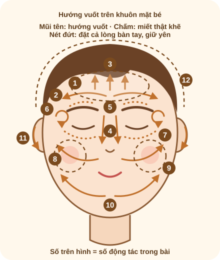

Yoga trẻ em · Chánh niệm
12 động tác massage mặt cho bé: nhẹ như một lời ru
Bé nằm ngửa trên tấm đệm xanh. Cô ngồi phía đầu, hai tay ôm lấy khuôn mặt nhỏ. Ngón cái vuốt từ giữa trán ra. Một lượt. Rồi lượt nữa.
Đến lượt thứ ba, đôi mắt con khép lại.
Massage mặt cho trẻ không cần nhiều kỹ thuật. Cần một đôi tay chậm. Và một người lớn chịu ngồi yên vài phút với con.
Bài này có 12 động tác, đi từ trán, xuống mắt, má, cằm, rồi đến tai và kết thúc bằng một cái ôm đầu. Mỗi động tác ghi rõ vị trí, cách làm, lực tay và thời gian. Người mới cũng làm theo được.
Xem đôi tay cô làm
Video quay một bạn nhỏ ở lớp, cô massage mặt cho con khoảng 40 giây. Mặt bé đã được làm mờ để giữ riêng tư cho con. Ở mỗi động tác bên dưới có nút ▶ Xem trong video, bấm vào là video tua đến đúng đoạn ấy.
Sơ đồ hướng vuốt
Trên mặt, các đường vuốt đi từ giữa ra hai bên và từ dưới lên trên. Theo hướng ấy, da mặt non của con không bị kéo trễ xuống, và cái chạm cũng có cảm giác mở ra, nhẹ nhõm.

Trước khi bắt đầu
Phòng ấm, ánh sáng dịu. Con nằm ngửa trên thảm hoặc trên giường, đầu kê một chiếc gối mỏng. Người lớn ngồi phía đỉnh đầu con, như trong video.
Sophia hay bắt đầu bằng ba hơi thở của chính mình. Tay đang vội, con biết ngay. Thở xong, tay mình tự khắc chậm lại.
Không cần dầu. Da mặt trẻ con mềm sẵn rồi. Nếu da con khô, có thể dùng một chút dầu dừa hoặc dầu em bé đã thử trước ở cổ tay con, và tránh xa vùng mắt.
12 động tác massage mặt
Làm theo thứ tự từ 1 đến 12. Con mệt hay muốn dậy thì dừng ở động tác nào cũng được.
-
1Chào con bằng đôi tay
📍 Vầng trán
Cách làm: Xoa hai bàn tay vào nhau cho ấm. Hỏi nhỏ: “Cô xoa mặt cho con nhé?” Con gật đầu rồi mới đặt một lòng bàn tay lên trán. Để yên. Thở cùng con.
Theo sơ đồ hướng vuốt
-
2Vuốt trán ra hai bên
📍 Từ giữa trán ra hai thái dương
Cách làm: Hai ngón cái đặt ở giữa trán, các ngón còn lại ôm nhẹ hai bên đầu. Hai ngón cái cùng vuốt ra hai bên, men theo phía trên lông mày, đến thái dương thì nhấc lên, quay lại giữa trán.
-
3Vuốt trán lên chân tóc
📍 Từ chân mày lên chân tóc
Cách làm: Lòng các ngón tay đặt ngay trên lông mày, vuốt thẳng lên tới chân tóc. Hai tay thay nhau, lượt này nối lượt kia, như những con sóng nhỏ đi lên.
Theo sơ đồ hướng vuốt
-
4Vuốt hai bên sống mũi
📍 Từ đầu lông mày men xuống cánh mũi
Cách làm: Đầu ngón cái đặt ở góc trong lông mày, vuốt xuống dọc hai bên sống mũi, dừng ở cánh mũi. Không đè lên lỗ mũi.
-
5Véo nhẹ dọc lông mày
📍 Lông mày, từ đầu đến đuôi
Cách làm: Ngón cái và ngón trỏ nhón nhẹ phần da ở đầu lông mày, nhả ra, rồi nhích dần ra phía đuôi. Tay kia đỡ đầu con cho yên.
-
6Xoa tròn thái dương
📍 Chỗ lõm hai bên đuôi mắt
Cách làm: Đầu hai, ba ngón tay đặt ở thái dương, xoa những vòng tròn nhỏ. Chậm thôi. Như bánh xe quay trong mơ.
-
7Miết nhẹ dưới mắt
📍 Trên vành xương dưới mắt, từ cạnh mũi ra đuôi mắt
Cách làm: Dùng ngón áp út, ngón yếu nhất của bàn tay. Chấm nhẹ từng điểm trên vành xương, đi dần ra phía đuôi mắt. Chỉ ở trên xương, không chạm mí mắt.
Theo sơ đồ hướng vuốt
-
8Vuốt má lên phía tai
📍 Từ cánh mũi, qua gò má, lên trước tai
Cách làm: Lòng các ngón tay đặt cạnh cánh mũi, vuốt chéo lên qua gò má, kết thúc ở trước tai. Hai bên cùng lúc.
-
9Ôm đôi má
📍 Hai má, ngón tay hướng về tai
Cách làm: Hai lòng bàn tay áp lên hai má con, giữ yên. Muốn thì xoa vài vòng thật chậm. Thường đến đây là con lim dim.
-
10Vẽ nụ cười
📍 Từ giữa cằm, theo quai hàm lên dưới tai
Cách làm: Hai ngón cái đặt ở giữa cằm, vuốt ra hai bên theo đường quai hàm, như vẽ một nụ cười lên mặt con. Cô không vuốt xuống phía trước cổ.
Theo sơ đồ hướng vuốt
-
11Day vành tai, kéo dái tai
📍 Vành tai từ trên xuống dái tai
Cách làm: Ngón cái và ngón trỏ day tròn dọc vành tai, từ trên xuống. Đến dái tai thì kéo khẽ xuống một chút rồi thả. Nhiều bạn khúc khích ở động tác này.
-
12Ôm đầu, nói lời chào
📍 Hai bên đầu, phía sau tai
Cách làm: Hai lòng bàn tay ôm hai bên đầu con, giữ yên vài hơi thở. Rồi vuốt một lượt từ trán lên đỉnh đầu. Nhấc tay thật chậm, như sợ đánh thức một giấc mơ.
Một buổi massage nhỏ ở nhà
Tối, sau khi tắm, trước khi đọc truyện. Đó là lúc cô thấy hợp nhất. Con đã sạch sẽ, người ấm, đang chậm dần cho giấc ngủ.
Ngày đầu chỉ cần ba, bốn động tác. Con quen rồi thì làm đủ cả bài. Có bé sẽ tự nằm xuống, chỉ vào trán: “Mẹ làm cái này đi.”
Massage chỉ là một phần nhỏ. Thứ nuôi con lớn lên khỏe mạnh vẫn là giấc ngủ đủ, bữa ăn lành, giờ chơi ngoài trời, và những hơi thở chậm cùng người thân. Năm phút massage mỗi tối là một cách để người lớn dừng lại và ở thật sự bên con.
Thêm một bài nhỏ: massage bàn chân
Trong lớp, sau phần mặt, có hôm cô massage thêm đôi bàn chân. Ngón cái xoa dọc lòng bàn chân. Day từng ngón chân bé xíu. Rồi vuốt từ cổ chân lên bắp chân, nhẹ nhàng.
Vài điều cô luôn giữ
- Hỏi con trước. Con lắc đầu thì chỉ ngồi cạnh con. Hôm khác lại hỏi.
- Tay sạch, tay ấm, móng cắt ngắn. Tháo nhẫn, vòng tay trước khi chạm vào mặt con.
- Không ấn vào mắt, không đè lên mũi miệng, không vuốt phía trước cổ.
- Bé ốm, sốt, mệt thì để con nghỉ. Da đang mẩn đỏ, chàm, trầy xước, mụn nhọt hay vết thương thì không massage vùng ấy.
- Con khó chịu là dừng. Con nhăn mặt, quay đi, khóc, thì nhẹ hơn hoặc dừng hẳn. Massage là để con dễ chịu.
- Với em bé dưới 1 tuổi, lực còn nhẹ hơn nữa và tránh vùng thóp. Bố mẹ nên hỏi bác sĩ nhi nếu con có bệnh da hay bệnh nền.
Điều cô mong
Mai này các con có thể quên hết các động tác. Không sao cả.
Cô chỉ mong con nhớ mang máng một cảm giác: từng có đôi tay rất chậm, rất ấm, ôm lấy khuôn mặt mình. Và trong khoảnh khắc ấy, con thấy mình được thương.
🌿 Cô giáo mầm non muốn đưa massage vào lớp mình?
Cách đặt tay, cách hỏi con trước khi chạm, cách cho cả lớp nằm yên chờ lượt, và cả buổi Yoga trọn vẹn từ lúc chào nhau đến lúc thư giãn, cô hướng dẫn trong khóa Đào tạo Huấn luyện viên Yoga trẻ em.
Bố mẹ muốn con học ở lớp của cô thì nhắn cô hỏi lịch nhé.